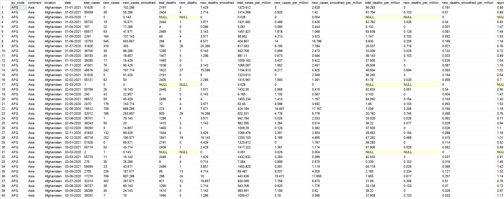
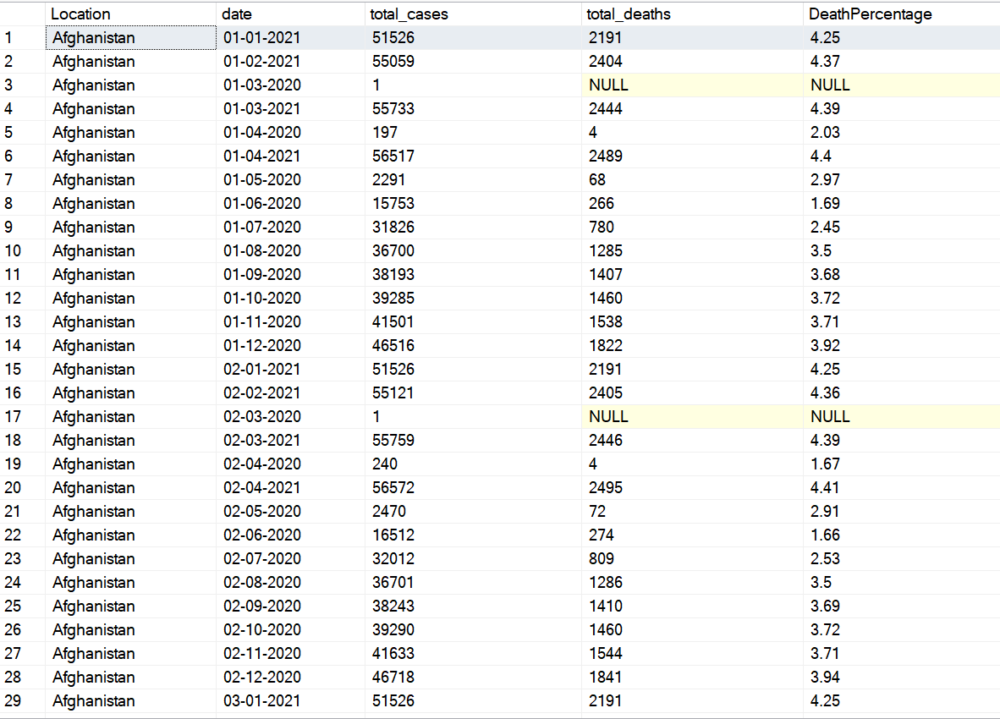
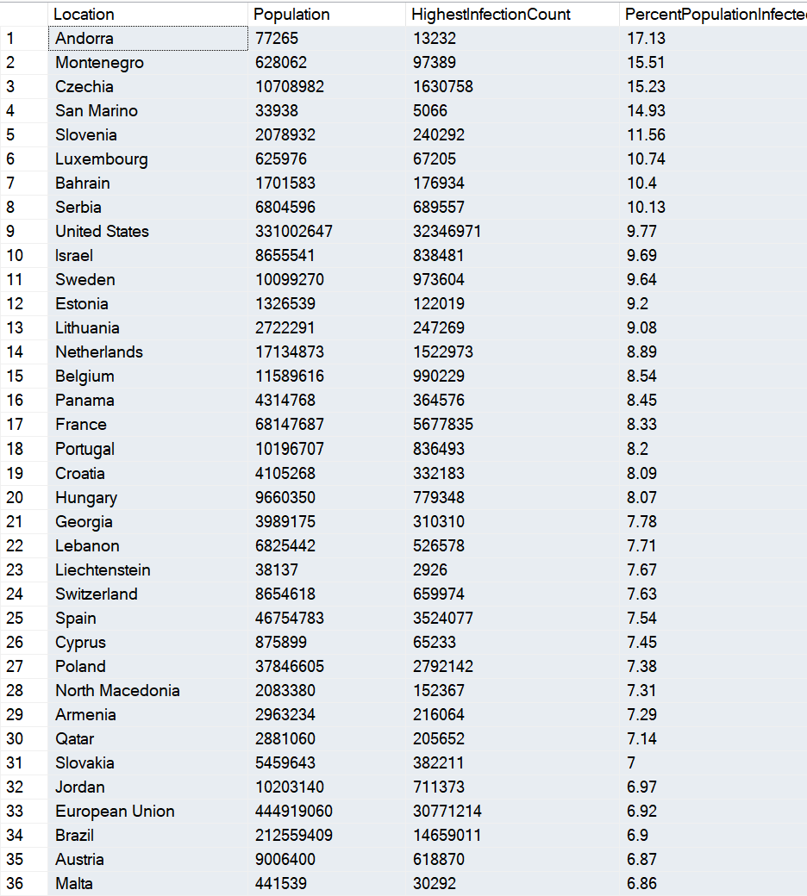
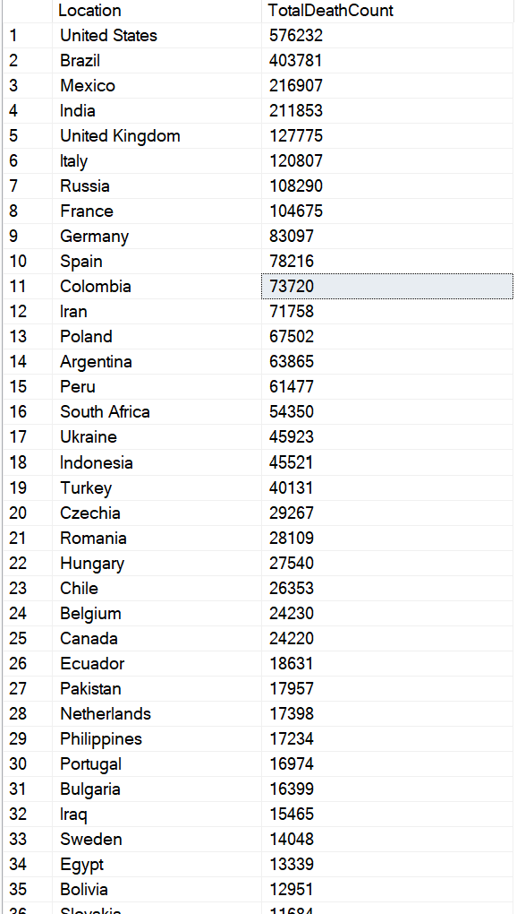
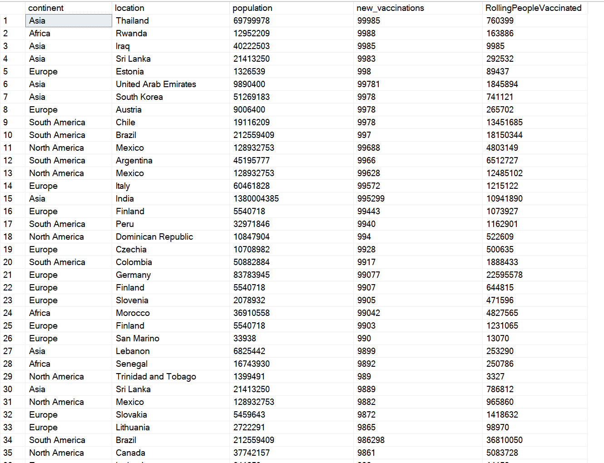
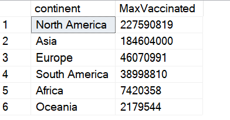

COVID-19 Data Exploration Using SQL
Analyzing global COVID-19 cases, deaths, and vaccination trends using advanced SQL techniques to uncover meaningful insights.

Project Summary
- Dataset: COVID-19 Deaths & Vaccinations Dataset
- Tool: SQL Server Management Studio (SSMS)
- Skills: Joins, CTEs, Temp Tables, Window Functions, Aggregate Functions, Views, Data Type Conversion
- Objective: Explore global COVID-19 trends, infection rates, death rates, and vaccination progress using SQL.
Project Goals
- Analyze COVID-19 cases and deaths worldwide
- Calculate infection and mortality rates
- Compare country-wise and continent-wise statistics
- Track vaccination progress over time
- Create reusable datasets for reporting
Tools Used
- SQL Server
- SSMS
- SQL
Data Exploration Workflow
Step 1: Initial Data Exploration
Loaded COVID-19 deaths and vaccination datasets and performed exploratory analysis to understand the structure and quality of the data.
SELECT *
FROM CovidDeaths
WHERE continent IS NOT NULL
ORDER BY 3,4

Step 2: Total Cases vs Total Deaths
Calculated death percentages to understand the likelihood of death after contracting COVID-19.
SELECT Location,
Date,
Total_Cases,
Total_Deaths,
(Total_Deaths/Total_Cases)*100 AS DeathPercentage
FROM CovidDeaths

Step 3: Infection Rate Analysis
Compared total cases against population to determine the percentage of population infected in each country.
SELECT Location,
Population,
MAX(total_cases) AS HighestInfectionCount,
MAX((total_cases/population))*100
AS PercentPopulationInfected
FROM CovidDeaths
GROUP BY Location, Population
ORDER BY PercentPopulationInfected Desc

Step 4: Death Count Analysis
Identified countries and continents with the highest COVID-19 death counts.
SELECT Location,
MAX(CAST(total_deaths AS INT))
AS TotalDeathCount
FROM CovidDeaths
WHERE continent IS NOT NULL
GROUP BY Location
ORDER BY TotalDeathCount DESC

Step 5: Vaccination Progress Analysis
Combined deaths and vaccination datasets using joins and calculated rolling vaccination totals using window functions.
Select dea.continent, dea.location, dea.population, vac.new_vaccinations
, SUM(CONVERT(int,vac.new_vaccinations)) OVER (Partition by dea.Location Order by dea.location, dea.Date) as RollingPeopleVaccinated
From CovidDeaths dea
Join CovidVaccinations vac
On dea.location = vac.location
and dea.date = vac.date
where dea.continent is not null
order by vac.new_vaccinations desc

Step 6: Advanced SQL Techniques
Used Common Table Expressions (CTEs), Temporary Tables, and Views to simplify calculations and create reusable datasets for future visualization projects.

Key SQL Concepts Used
Joins
Combined COVID deaths and vaccination datasets for comprehensive analysis.
Window Functions
Calculated rolling vaccination totals using SUM() OVER().
CTEs
Improved readability and simplified complex queries.
Temporary Tables
Stored intermediate calculations for vaccination analysis.
Views
Created reusable datasets for dashboards and reporting.
Aggregate Functions
Summarized global cases, deaths, and vaccination metrics.
Project Outcome
Successfully analyzed global COVID-19 data using SQL and generated valuable insights into infection rates, mortality rates, and vaccination progress. This project demonstrated practical application of Joins, CTEs, Temporary Tables, Window Functions, Aggregate Functions, Views, and Data Type Conversion techniques used in real-world data analytics projects.